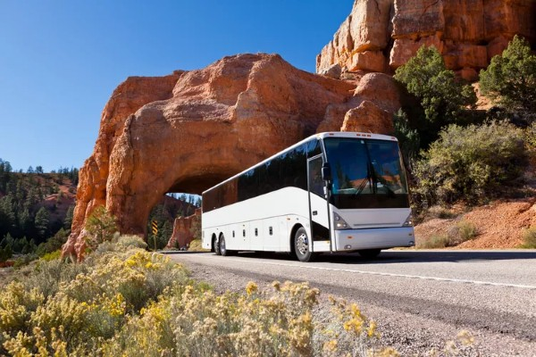
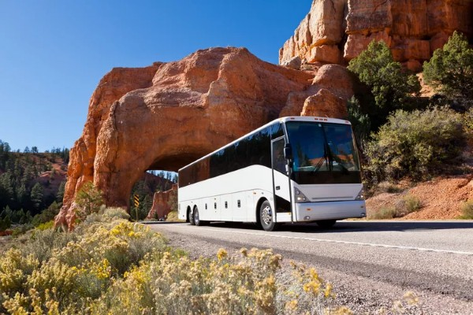

Why M&J Tours?
M&J Tours Discover the World has been at the forefront of bespoke tourism since 2000.Name a travel style or preference and there’s a tour company out there that caters to it—though not all travel tour companies are created equally. To help plan your next jaunt to destinations near and far, we rounded up some of the best tour companies out there, whether you’re a food-obsessed jetsetter, wish to lean into hidden histories, or want maximum adventure on a budget. In that time, we’ve become one of the Washington's leading independent specialist travel companies.
Check our Lodges


Discover Our Sales
- Cairo
- Paris
- Italy
- Johansburg
- Brazil
- Nairobi, Kenya
Discover our Sales
 


- Flight to Cairo...$3500
- Flight to Paris...$5000
- Flight to Italy...$5000
- Flight to Johansburg...$6000
- Flight to Brazil....$7000
- Flight to Kenya...$5000
Top Destinations
Portugal Solo Trip 10/04/22 by 4th-time traveler Violet What a great trip! I started out not knowing anyone and finished with 29 friends. I had a great time, ate fabulous food and enjoyed beautiful scenery. Rafi was a great and knowledgeable tour guide. Excellent! 05/10/22 by 3rd-time traveler Gena This was my first solo tour but it won't be my last. My fellow travelers were wonderful and easy to get along with. The hotels were all comfortable, spacious, and accommodating. The food was delicious in every hotel restaurant and tour venue. Ireland for Solo Travelers →When you set out for the finest Touring destinations in the world, you deserve an elevated charter experience managed by the best M&J Tour Discoveries in the industry. Our team has the knowledge you need to have the experience of a lifetime including secret anchorages quiet spots, and not-to-miss experiences in each location. Some of the destinations not in the list are For Information Click HERE
Best Time to Travel
The gigantic Kruger National Park (about the same size as Israel or Wales) is big enough to offer something for everyone. With diverse wildlife, including the Big Five (with an estimated 1,500 lions but heavily threatened rhinos,) Kruger’s excellent road network means that most areas are accessible even with two-wheel drive vehicles. Often derided for being “tame wilderness” because of tarred roads and good infrastructure, this huge park measures 414 kilometers from Crocodile Bridge in the south to Pafuri Gate in the north – for added wilderness appeal it is recommended to head farther into the less-visited tracks and trails of the north. For first-timers: For the independent traveler with a hired vehicle, Kruger is arguably the cheapest and most accessible of all Africa’s major parks. Sabi Sand Game Reserve shares a 50-kilometer unfenced border with Kruger National Park and it benefits from incredible wildlife viewing (along with possibly the best leopard spotting in the world.) For old hands: Phinda Private Game Reserve in KwaZulu-Natal offers some of the best cheetah sightings, huge leopards, a rare chance to see both the black and white rhinos and a bird list of well over 400 species.